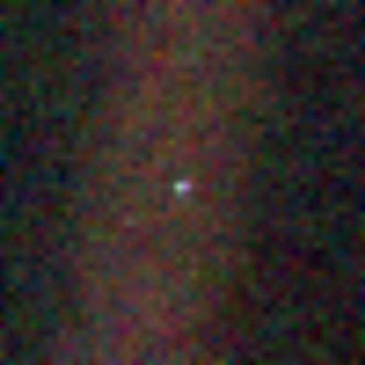

Dr. J. Schieber's Class Web Site for:
G105 (Earth: Our Habitable Planet) Spring 2007
| Part 1 (chapters 1 - 5) | The Earth as "A Pale Blue Dot" (center of image). The image below was taken by the space probe Voyager 1, on Feb. 14, 1990 from a distance of approximately 4 billion miles and about 32 degrees above the ecliptic plane (launched September 1977). |
| Part 2 (chapters 6 - 10) | |
| Part 3 (chapters 11-13) |
